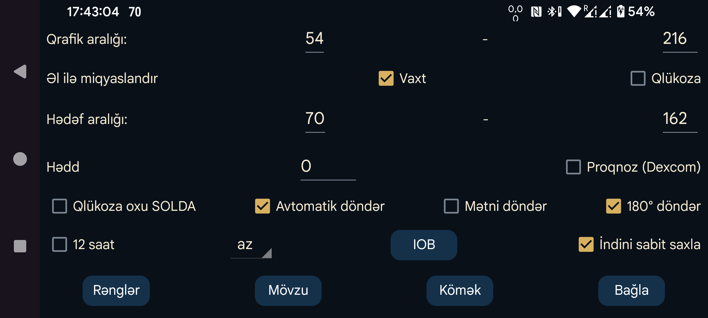

Aşağı və yuxarı həddi daxil edin. Qrafikin alt kənarı minimum, üst kənarı maksimum səviyyəyə uyğun olacaq. Bu hədlər yalnız ekranda göstərilən bütün qlükoza göstəriciləri həmin aralığa düşdükdə tətbiq olunur; əks halda bütün göstəricilər görünsün deyə aralıq avtomatik genişləndirilir. Məsələn, 3 mmol/L (54 mg/dL) və 9 mmol/L (162 mg/dL) təyin etdikdə, görünən göstəricilərin hamısı 5–6 mmol/L arasında olsa belə, qrafikin qlükoza oxu 3-dən 9-a qədər uzanacaq.
Qlükozanı əl ilə miqyaslandır aktivdirsə, qrafikin yuxarı hissəsində barmağınızı sürüşdürərək yuxarı həddi, aşağı hissəsində sürüşdürərək aşağı həddi dəyişə bilərsiniz.
Yüksək göstəricilər daha rahat seçilsin deyə qrafikin yuxarı hissəsi başqa rənglə göstərilir. Aşağı göstəricilər üçün də eyni qayda tətbiq edilir. Həddən artıq aşağı səviyyəni bildirmək üçün qırmızı xətt çəkilir.
Qlükoza oxunun rəqəmlərini ekranın ortasında deyil, sol kənarında göstərir.
Qlükozanın dəyişmə sürətinə hədd tətbiq edir. Dəyişmə sürəti sıfırdan ən azı bu qədər fərqlənirsə, istiqamət oxu üfüqi vəziyyətdən yayınır. 0 ilə 0,8 arasında istənilən qiyməti seçə bilərsiniz. Bu hədd kiçik dəyişiklikləri həddindən artıq şərh etməyin qarşısını alır. Bəzən ox qlükozanın yavaş artdığını göstərə bilər, halbuki əsas tendensiya əslində azalır. Hədd daha ehtiyatlı qiymətləndirməyə imkan verir.
Dexcom sensorları hər real qlükoza göstəricisi ilə birlikdə proqnoz göstəricisi də göndərir. Bu barədə açıq izah tapa bilmədim; yalnız Dexcom-un 20 dəqiqə əvvəldən aşağı qlükozanı proqnozlaşdıran siqnalı dəstəklədiyi barədə məlumat var: Dexcom G7 xəbərdarlıqları.
Proqnoz göstəricilərini qrafikdə 20 dəqiqə irəliyə yerləşdirdikdə real göstəricilərlə yaxşı uyğunlaşmadılar. 10 dəqiqə irəli yerləşdirildikdə uyğunluq daha yaxşı oldu.
Bu seçimi aktiv etdikdə proqnoz göstəriciləri Libre sensorlarının Tarixçə göstəriciləri kimi göstərilir. Onları ortanın sağındakı menyu → Tarixçə işarəsini söndürərək gizlətmək olar. Juggluco bu proqnozlardan siqnallar üçün istifadə etmir; sadəcə proqnozların nə dərəcədə düzgün olduğunu qiymətləndirmək üçün göstərə bilərsiniz.
Ekranı başıaşağı çevirir. Bu seçim standart olaraq aktivdir, çünki əks halda sensor skan edilərkən təsadüfən OK düyməsinə toxuna bilirdim.
Yalnız Android-in avtomatik döndərmə funksiyası da aktiv olduqda işləyir. Telefon döndərildikdə qrafik və menyular istisna olmaqla bütün digər elementlər döndərilir.
Yalnız avtomatik döndərmə aktiv olduqda istifadə edilə bilər və əsas qrafiklə menyuların mətninə aiddir. İşarələnibsə, qrafikdəki və menyulardakı mətn ekranla birlikdə döndərilir. Landşaft rejimində birinci menyunu açmaq üçün ekranın sol dörddəbirinə toxunmaq lazımdır. Portret rejimində isə ekranın aşağı dörddəbirinə toxunulur və qalan menyular da uyğun mövqelərə keçir. Seçim işarələnməyibsə, qrafik və menyular avtomatik döndərmə söndürülmüş vəziyyətdəki kimi qalır.
IOB əvvəlki insulin dozalarından orqanizmdə hələ təsirini saxlayan insulinin təxmini miqdarını göstərir. Bunun üçün insulin dozalarını Teztəsirli insulin kateqoriyasına aid etiketlə daxil etməlisiniz. Etiketlərin kateqoriyasını sol menyu → Tənzimləmələr → Məlumat mübadiləsi → Veb-server → Miqdarları ötür bölməsində seçə bilərsiniz.
Bu seçim aktivdirsə, qrafikdə göstərilən vaxt aralığı vaxtaşırı sola sürüşdürülür ki, indiki vaxt ekranda həmişə eyni yerdə qalsın. Bəzi istifadəçilər Juggluco-nu bir neçə metr uzaqda duran kompüterdə Android emulyatoru ilə işlədirlər. Seçim söndürülübsə, cari qlükoza göstəricisi zaman keçdikcə sağa hərəkət edər və bir neçə saat sonra görünməz olar. Belə olduqda kompüterə yaxınlaşıb qrafiki əl ilə sürüşdürmək lazımdır. Seçim aktiv olduqda buna ehtiyac qalmır.
Juggluco seçilmiş dildə göstərilir. Dil kodu seçilməyibsə, sistemin dili istifadə olunur.
Qrafik xətlərinin, skanların və miqdar qeydlərinin rənglərini dəyişin. Qaranlıq rejim üçün ortanın sağındakı menyu → Qaranlıq rejim seçimini istifadə edin.
İstifadəçi interfeysinin rənglərini və düymələrin formasını dəyişin.